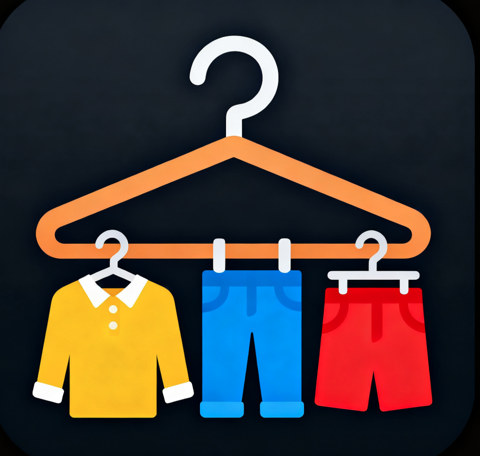
用户手册 / 文档鉴别材料
版本号：V1.2
| 软件全称 | 服饰识别软件 |
|---|---|
| 软件简称 | 服饰识别 |
| 版本号 | V1.2（versionCode 3） |
| 软件分类 | 应用软件 — 移动智能终端 Android 平台 |
| 包名 | com.deepfashion.classifier |
| 著作权人 | （请填写） |
| 开发完成日期 | （请填写） |
| 文档编制日期 | 2026年 |
本文档用于软件著作权登记之文档鉴别材料，含功能说明、界面展示与操作步骤。
「服饰识别」是一款面向移动智能终端的离线服饰图像分类应用软件。用户通过拍照或从相册选取衣物图片，软件在本地调用深度学习模型完成 50 类服饰类别的识别，并给出类别名称、置信度及百科说明，适用于服装整理、电商辅助标注、教学演示等场景。
V1.2 在 V1.1 主框架基础上新增：相机连拍（3/5/8 张）及拍摄分辨率设置；分享图片水印与对比长图拼接；推理单例与 LRU 缓存、协程异步分类；崩溃日志查看；本地 ZIP 备份导入/导出；无障碍描述与 UI 冒烟测试等。
| 操作系统 | Android 7.0（API 24）及以上 |
|---|---|
| 目标 SDK | Android 14（API 34） |
| 处理器架构 | arm64-v8a、armeabi-v7a |
| 存储空间 | 建议 80MB 以上（含 ONNX 模型） |
| 硬件要求 | 后置/前置摄像头（拍照识别） |
| 权限 | 用途 |
|---|---|
| 相机 | 拍摄衣物照片进行识别 |
| 读取图片/存储 | 从相册选图、导出备份文件到下载目录 |
若用户拒绝相机权限，应用通过 Snackbar 提示并可跳转系统设置页授权。
软件采用 Android 原生 Kotlin 开发，主界面为 MainContainerActivity，内嵌五个 Fragment；各功能模块以 Activity 形式承载详情与工具页。推理核心为 DeepFashionClassifier，由 ClassifierProvider 提供应用级单例与结果缓存。
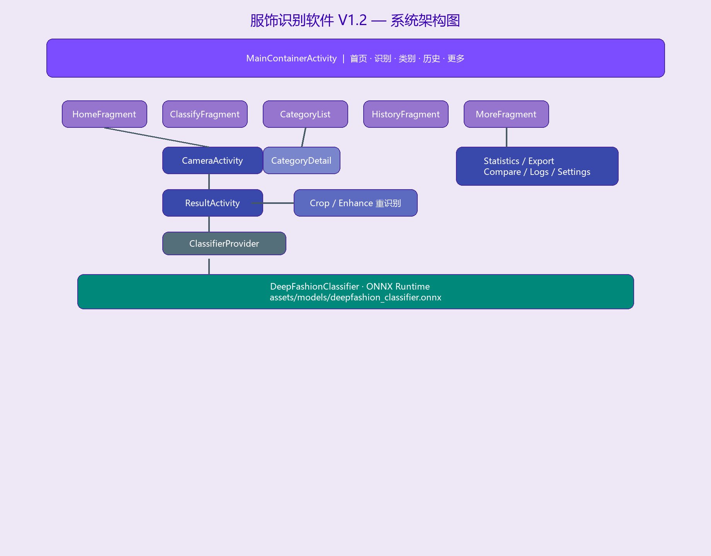
启动应用后进入主容器界面，底部导航栏固定五个入口：首页、识别、类别、历史、更多。各 Tab 切换时保留独立 Fragment，符合 Material 3 导航规范。
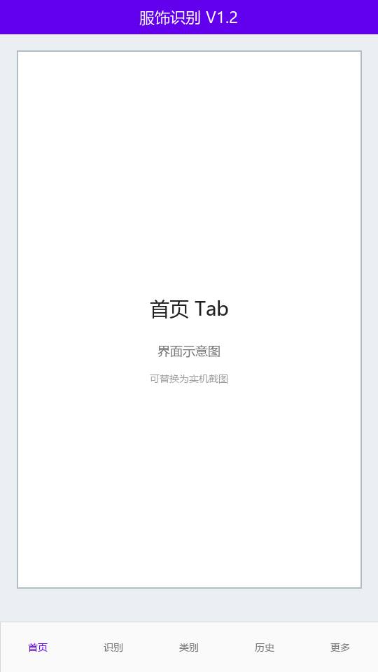
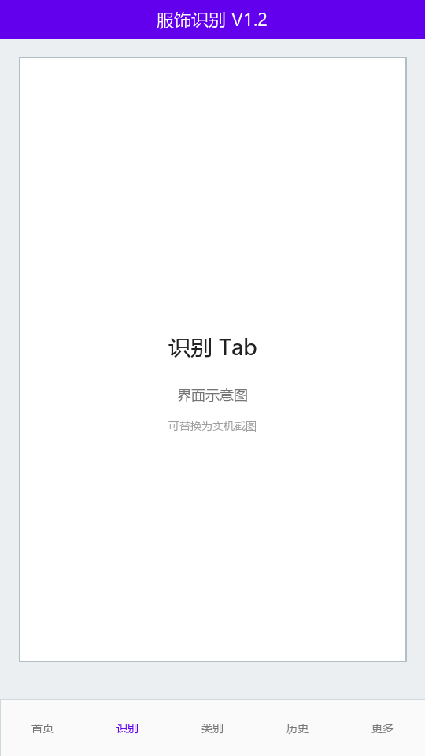
点击「开始识别」进入全屏相机页。支持前后摄像头切换、双指缩放、单击/双击对焦（对焦框动画）、可选三分构图网格线与快门音效。顶部可切换单拍与连拍模式。
拍摄分辨率可在设置中选择高（1920×1080）、中（1280×720）、低（640×480）。拍照后在后台线程调用 ONNX 模型推理，完成后跳转结果页。
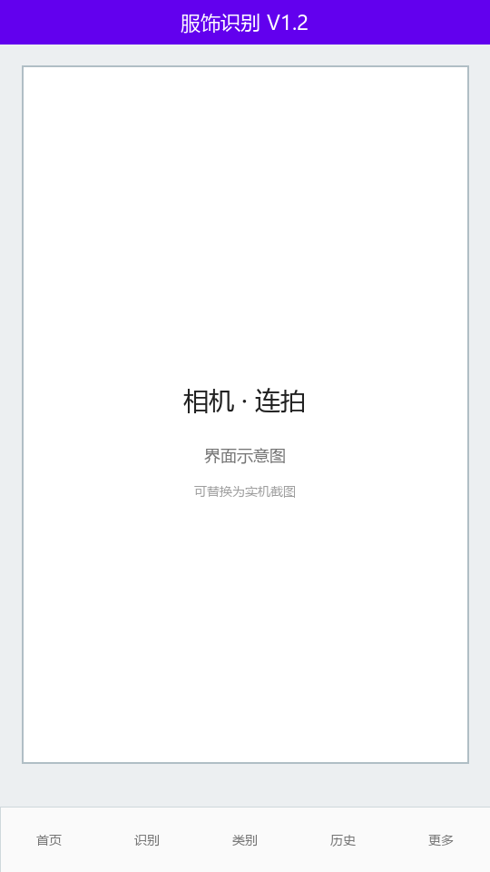
连拍 3 / 5
设置中可配置连拍张数及结果策略：保留最高置信度（仅展示最优一张结果）或全部保存到批量结果（进入批量结果列表，可一键写入历史）。
识别 Tab 支持从系统相册选择单张或多张图片。批量识别页展示进度条，完成后列出每张图片的类别与置信度，支持全部保存到历史记录。
结果页展示识别类别（中英文）、置信度进度条、百科描述。支持 Top-3 候选结果 Tab 切换。菜单提供分享（文字/图片，图片可带水印）、保存到相册、收藏、裁剪重识别、增强重识别等操作。
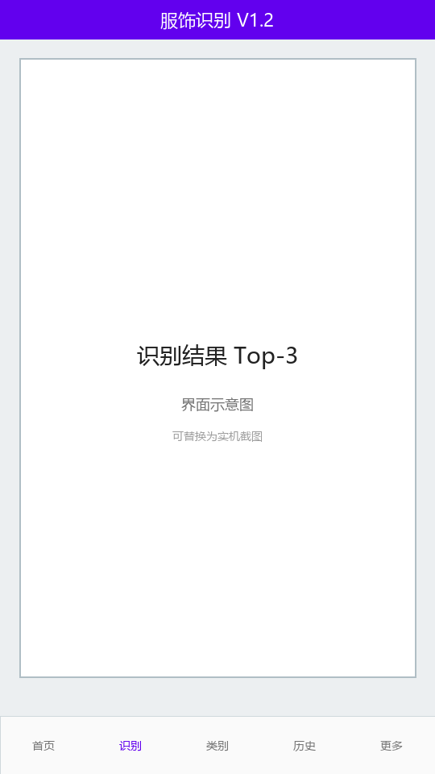
棉质短袖，休闲百搭…
用户可在结果页进入裁剪页，通过可拖拽、四角缩放的裁剪框（CropOverlayView）框选衣物区域，点击重识别后仅对选中区域推理，提高遮挡或背景复杂场景下的准确率。
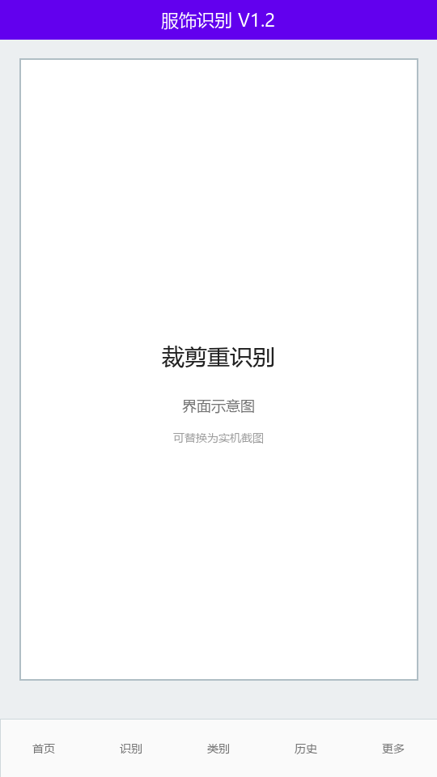
提供亮度、对比度、锐化三个 SeekBar 实时预览，满意后执行增强并重识别。
「类别」Tab 按服饰大类分组展示 50 个英文类别及中文译名，支持搜索。点击类别进入详情页，展示风格、适用场景、搭配建议、护理说明；可「开始识别」或「查看该类历史」（跳转历史 Tab 并预填类别筛选）。
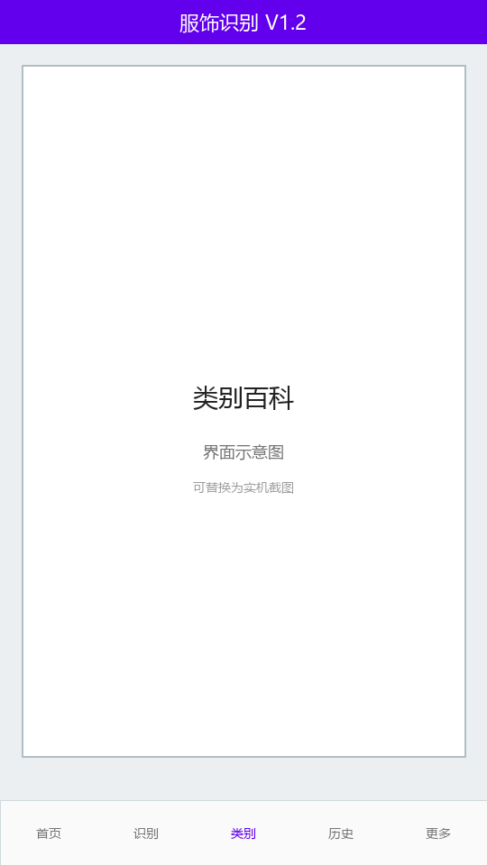
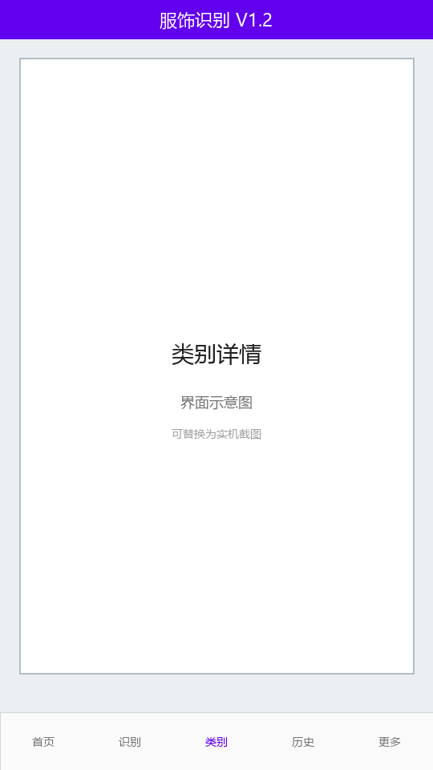
休闲棉质上衣…
历史 Tab 以时间倒序展示 JSONL 持久化记录，含缩略图、类别、置信度、时间。支持搜索、按类别/置信度/时间筛选、仅看收藏、多选批量删除与导出。点击记录可查看详情或跳转结果页。
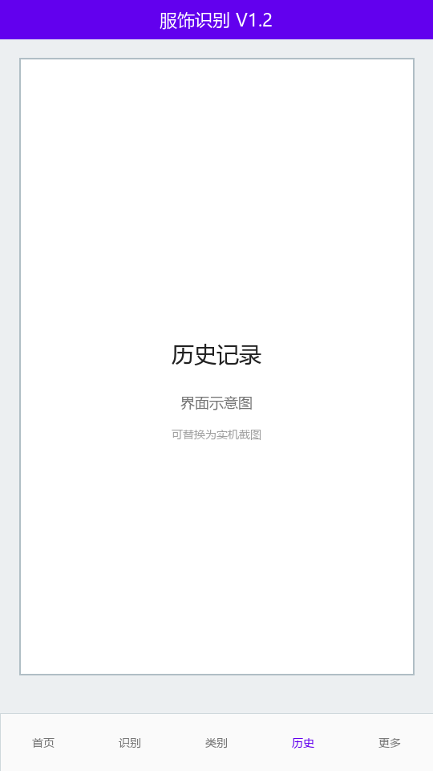
更多 → 数据统计：展示累计/本周识别次数、平均置信度、识别最少类别；近 7 日/30 日趋势柱状图；Top 类别饼图（含「其他」聚合）。
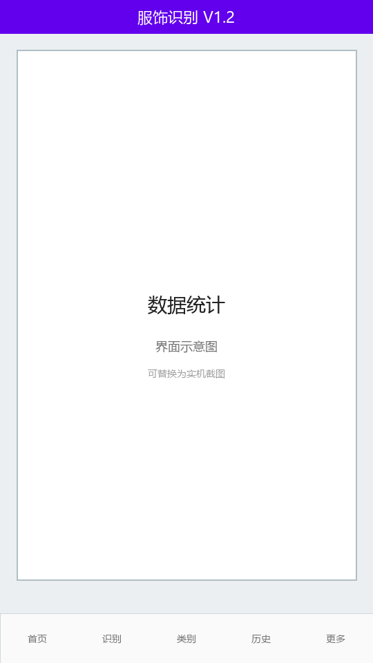
对比记录功能：用户分别选择两条历史记录，并排展示缩略图、类别、置信度、百科描述及差异摘要（类别是否相同、置信度差值）。两侧均选中后可「生成长图」拼接后系统分享。
类别不同 · 置信度差值 +12%
分享图片时可在设置中开启右下角水印「服饰识别 · 类别 置信度%」。
导出数据页显示存储占用与记录条数。支持导出 JSONL、CSV 到下载目录；导出本地 ZIP 备份（含 history.jsonl 与 images 目录）；从 JSONL 或 ZIP 导入（追加合并或覆盖替换）。不提供账号云端同步。
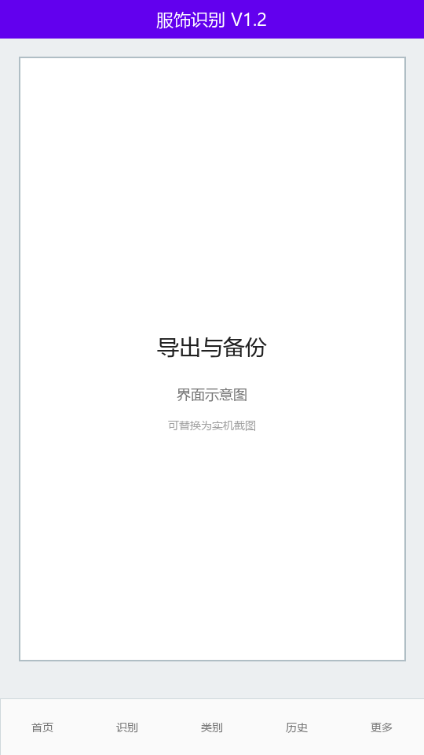
「更多」Tab 以卡片网格入口：数据统计、收藏夹、对比记录、导出数据、崩溃日志、帮助中心、更新日志、模型信息、设置。
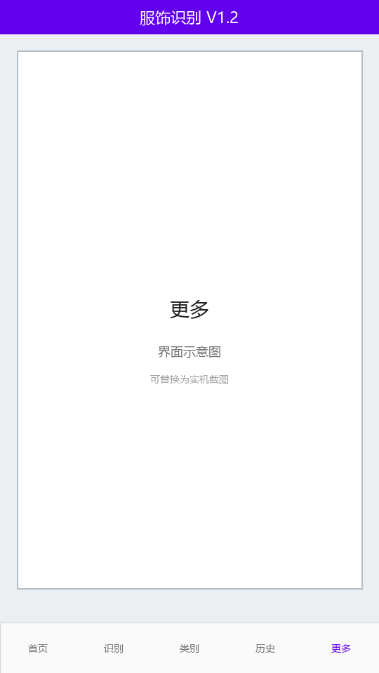
| 设置项 | 说明 |
|---|---|
| 性能优先（多线程） | 开启后 ONNX 使用约 CPU 核心数/2 的线程 |
| 界面语言 | 中文 / English，即时生效 |
| 主题 | 跟随系统 / 浅色 / 深色 |
| 结果展示密度 | 精简 / 标准 / 详细 |
| 构图网格线 | 相机取景三分线 |
| 快门音 | 拍照音效开关 |
| 默认摄像头 | 前置 / 后置 |
| 拍摄分辨率 | 高 / 中 / 低 |
| 连拍张数与策略 | 3/5/8 张；最优或全部批量 |
| 分享图片水印 | 分享图右下角水印开关 |
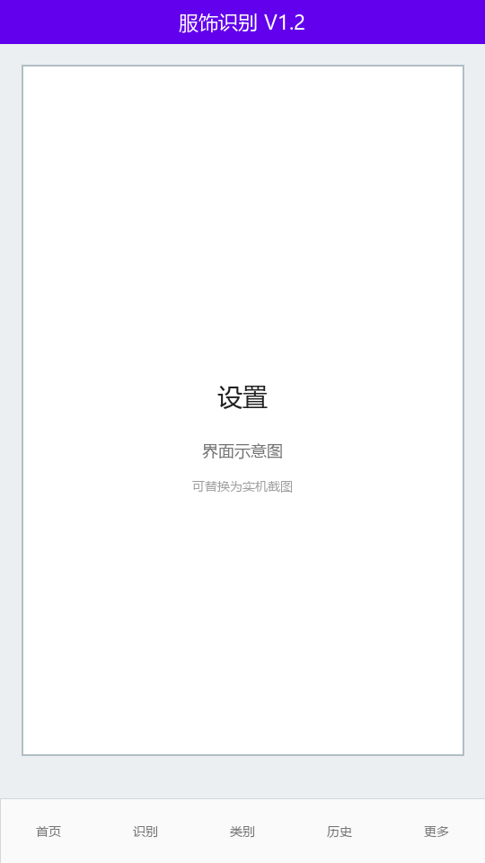
应用启动时注册全局异常处理器，崩溃信息写入应用私有目录 logs/。用户可在「崩溃日志」页查看、删除单条或清空全部日志。
首次安装完成后展示四页引导：快速识别、手势对焦、类别百科、历史与管理。帮助中心提供 FAQ、权限说明、拍摄技巧。模型信息页展示版本号、模型结构、输入尺寸、推理线程数等。
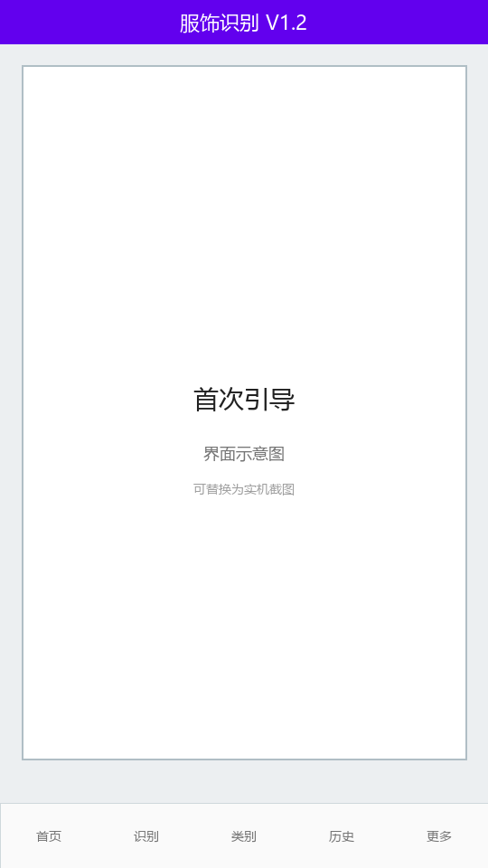
拍照或相册选图
离线识别 50 类服饰
| 序号 | 界面名称 | 类名 | 功能摘要 |
|---|---|---|---|
| 1 | 主框架 | MainContainerActivity | 底部五 Tab 容器 |
| 2 | 首页 | HomeFragment | 统计摘要、最近识别 |
| 3 | 识别入口 | ClassifyFragment | 拍照/相册/批量入口 |
| 4 | 相机 | CameraActivity | 单拍/连拍、对焦缩放 |
| 5 | 识别结果 | ResultActivity | Top-3、分享、收藏 |
| 6 | 类别列表 | CategoryListFragment | 50 类百科 |
| 7 | 类别详情 | CategoryDetailActivity | 百科与快捷操作 |
| 8 | 历史 | HistoryFragment | 筛选、多选、搜索 |
| 9 | 批量识别 | BatchClassifyActivity | 多图进度识别 |
| 10 | 批量结果 | BatchResultActivity | 列表、全部存历史 |
| 11 | 裁剪重识别 | ImageCropActivity | 手动画框 |
| 12 | 增强重识别 | ImageEnhanceActivity | 亮度/对比度/锐化 |
| 13 | 数据统计 | StatisticsActivity | 图表与指标 |
| 14 | 收藏夹 | FavoritesActivity | 收藏记录列表 |
| 15 | 对比 | CompareActivity | 双记录对比、长图 |
| 16 | 导出 | ExportActivity | JSONL/CSV/ZIP |
| 17 | 崩溃日志 | LogViewerActivity | 本地日志查看 |
| 18 | 设置 | SettingsActivity | 偏好配置 |
| 19 | 引导 | OnboardingActivity | 首次四页引导 |
| 20 | 帮助/日志/模型 | Help/Changelog/ModelInfo | 辅助信息页 |
docs/screenshots/ 目录（见该目录 README），刷新后自动替换示意图。— 文档结束 —